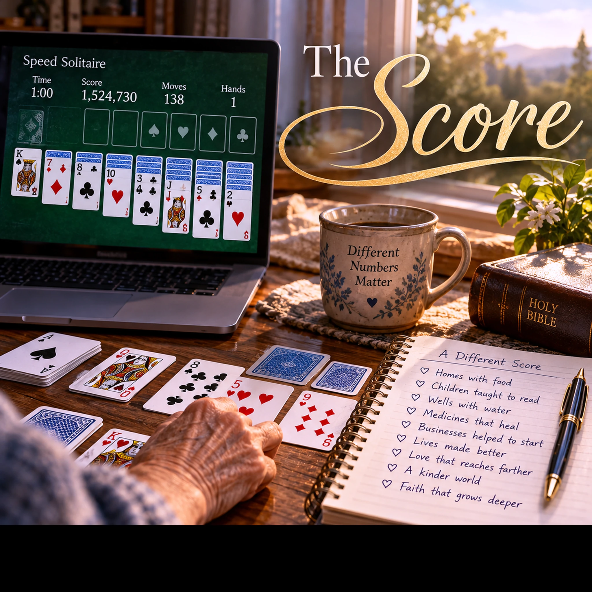

The Score

Want to download this song? Return to the Songs page, add this song to your playlist, then open My Playlist. Select the song and choose Download Song to review the Free Use agreement.
Lyrics
Verse 1
I play a lot of speed solitaire
To keep my aging mind alert
With mind-eye coordination to spare,
Plays and strategy, fully aware—
A little speed can never hurt
Settings set for velocity
I race the clock from hand to hand
And watch my time as I play
A million points, nothing planned
But still I watch them anyway
Chorus
What makes a number matter?
Why must I see it grow?
Is the prize me getting better,
Or seeing how high it can go?
Is there another way of winning,
Another number I could pursue
If I changed what counts as winning,
What would new numbers do?
Verse 2
I watch the numbers as they climb
Each measures something different
Some mark progress, some mark time
Some tell me of my improvement
The numbers change by how I play
And by the rules I choose to keep
If I count a different way—
What numbers can I seek?
Chorus
What makes a number matter?
Why must I see it grow?
Is the prize me getting better,
Or seeing how high it can go?
Is there another way of winning,
Another number I could pursue
If I changed what counts as winning,
What would new numbers do?
Bridge
The rich count in millions and billions
Net worth rising steadily year after year
Markets, margins, deals, acquisitions
Make the measure of winning clear
Once there's more than could ever be spent
What does another billion mean?
Maybe it's not the money and its extent
Maybe it's just the number on the screen
Chorus
What makes a number matter?
Why must I see it grow?
Is the prize me getting better,
Or seeing how high it can go?
Is there another way of winning,
Another number I could pursue
If I changed what counts as winning,
What would new numbers do?
Final Chorus
Let's count the homes that now have food
Count the children taught to read
Count the wells where water flows
Count those receiving what they need
Count the businesses helped to start
Count the cures that funding found
Count the lives made better by—
Turning the old numbers around
Outro
There are so many ways to keep score
Let’s see what the metrics implore.
We can find a better way to do more.
Devotional
What Are We Counting?
Numbers can be useful. They tell us whether we are improving, whether a task is finished, or whether resources are growing. In the song, The Score, a game of speed solitaire raises a surprisingly searching question: What makes a number matter? The singer does not condemn keeping score. Instead, the song asks whether we have chosen the right things to count.
Jesus warned in Luke 12:15, “a man's life consisteth not in the abundance of the things which he possesseth.” Wealth can purchase necessities, create opportunities, and support good work. But a larger balance, by itself, cannot tell us whether our lives have become richer in what matters to God. The number on the screen measures possession; it does not measure love, mercy, or faithfulness.
In Matthew 6:19–21, Jesus turns our attention from treasures that do not last toward treasure in heaven, concluding, “For where your treasure is, there will your heart be also.” That is the deeper question beneath the song's chorus. What do the things we count reveal about what we treasure? If the score changes, does the purpose change with it?
Scripture does not teach that money is inherently evil, nor that every person with substantial resources is unfaithful. Rather, 1 Timothy 6:17–19 charges those who are rich not to trust in “uncertain riches” but to be “rich in good works, ready to distribute, willing to communicate.” Resources are entrusted to people who can use them for the good of others. The question becomes not merely how much we have accumulated, but what faithful stewardship makes possible.
The final chorus begins to count differently: food in homes, children learning to read, clean water, useful businesses, healing, and lives improved. These are not replacements for the gospel, nor are they a complete measure of anyone's worth. They are tangible reminders that generosity has neighbors. 2 Corinthians 9:8–12 connects God's provision with “every good work” and thanksgiving to God. Giving is not a contest to win; it is an opportunity to serve.
We can ask this question at any income level. A bank account, a game score, a listener count, or a tally of accomplishments can all become useful tools—or become the prize itself. The song, The Score, invites us to examine the rules by which we measure success and then submit those rules to God's Word. The most important change may not be in the numbers. It may be in what we have decided is worth counting.
Prayer: Father, thank You for the abilities, time, and resources You have entrusted to us. Give us wisdom to measure progress without mistaking numbers for purpose. Guard our hearts against pride and misplaced trust. Teach us to use what we have to love our neighbors, meet real needs, and honor You. In Jesus' name, Amen.
Extra Info — Scripture Map
Scripture Connections
Luke 12:15 — Life is more than an abundance of possessions.
Matthew 6:19–21 — The relationship between treasure and the heart.
1 Timothy 6:17–19 — Wealth, generosity, and trust in God.
2 Corinthians 9:8–12 — God's provision and generosity that produces thanksgiving.
Matthew 25:14–30 — Faithful stewardship of what has been entrusted to us.